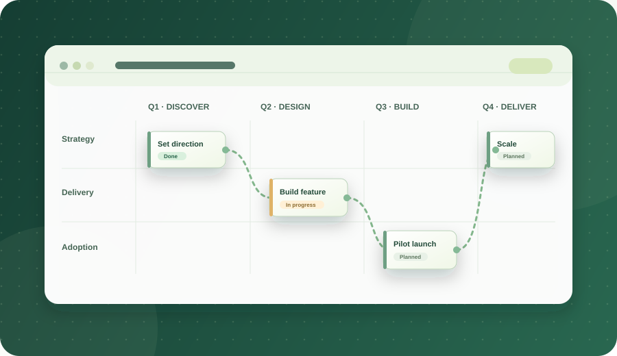
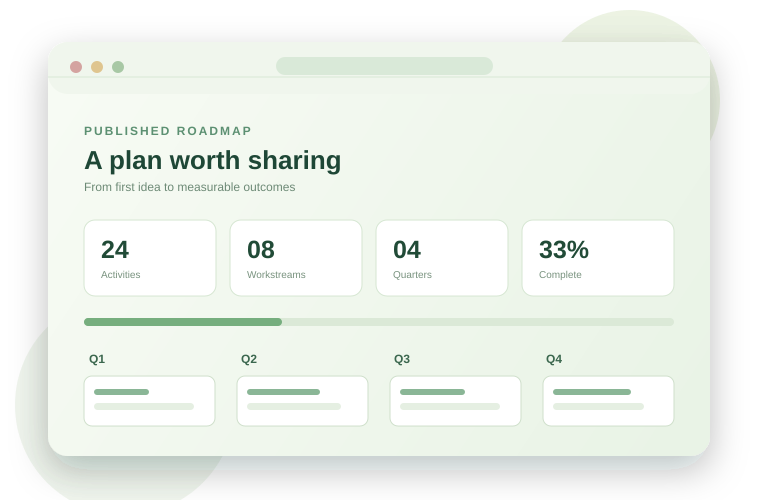
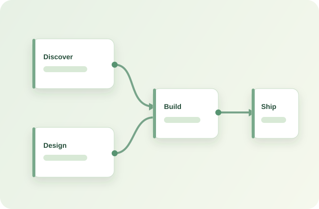

Pick up where you left off
Plans save in your browser. Copy a link to your specific plan and return to it later in the same browser.
How saved links work →Loading your roadmap…
PLAN · CONNECT · DELIVER
Bring workstreams, quarters and dependencies into one beautiful, practical plan. Start from a template, come back to your work later and publish a polished view for your team.
Explore the documentation →
Plans save in your browser. Copy a link to your specific plan and return to it later in the same browser.
How saved links work →
Create a read-only roadmap with progress, milestones and a shareable snapshot link.
Learn about publishing →
Keep multiple activities per cell and track cross-workstream prerequisites without losing the bigger picture.
Learn to connect activities →Each example has four workstreams, four quarters and eight illustrative activities. They are starting points, not verified forecasts or regulatory advice.
All editing features are free. Editable plans stay in this browser unless exported. Published links contain a copy of the plan data; they are not private or live-synchronised. Documentation · Quick guide · Agent data guide
OPEN SOURCE · BUILT TOGETHER
Free for everyone, open to improvement. Read the code, report a problem, suggest a feature or contribute a roadmap example. Every contribution helps the community.
Build & test status · CodeQL security analysis · Report security concerns privately · Privacy & data · Code of conduct
The workflow badges above report GitHub status, not an independent audit or security certification. Your roadmap stays in this browser unless you export it or create a share link. Share links contain a copy of the included roadmap data. Automated checks improve confidence but cannot guarantee that software is free of vulnerabilities.